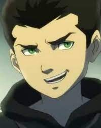
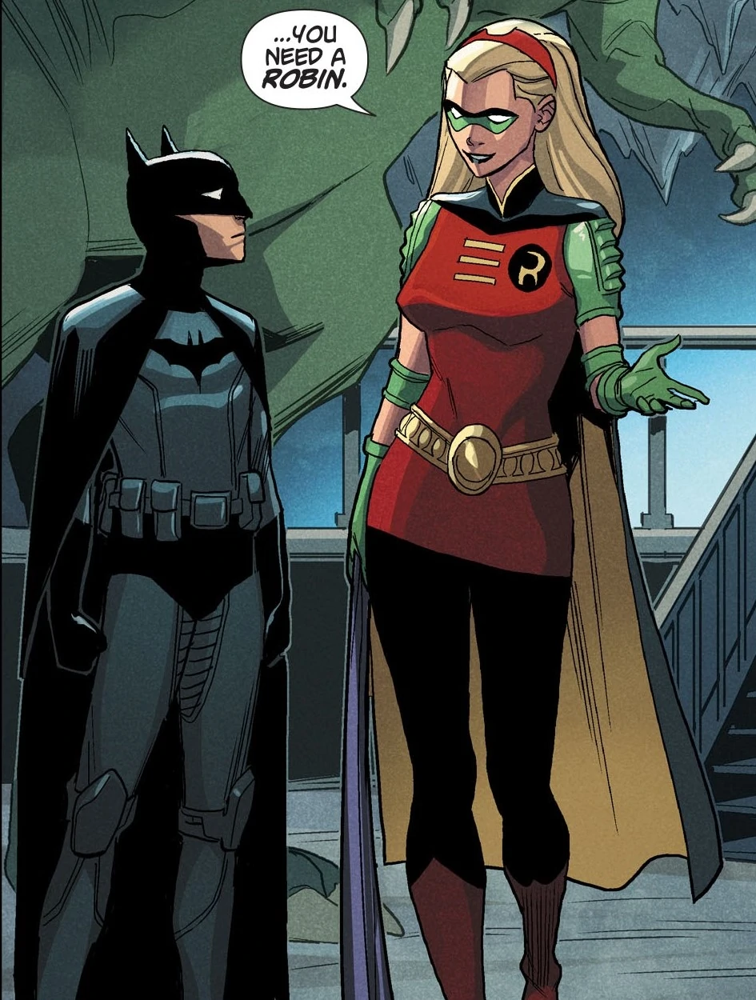
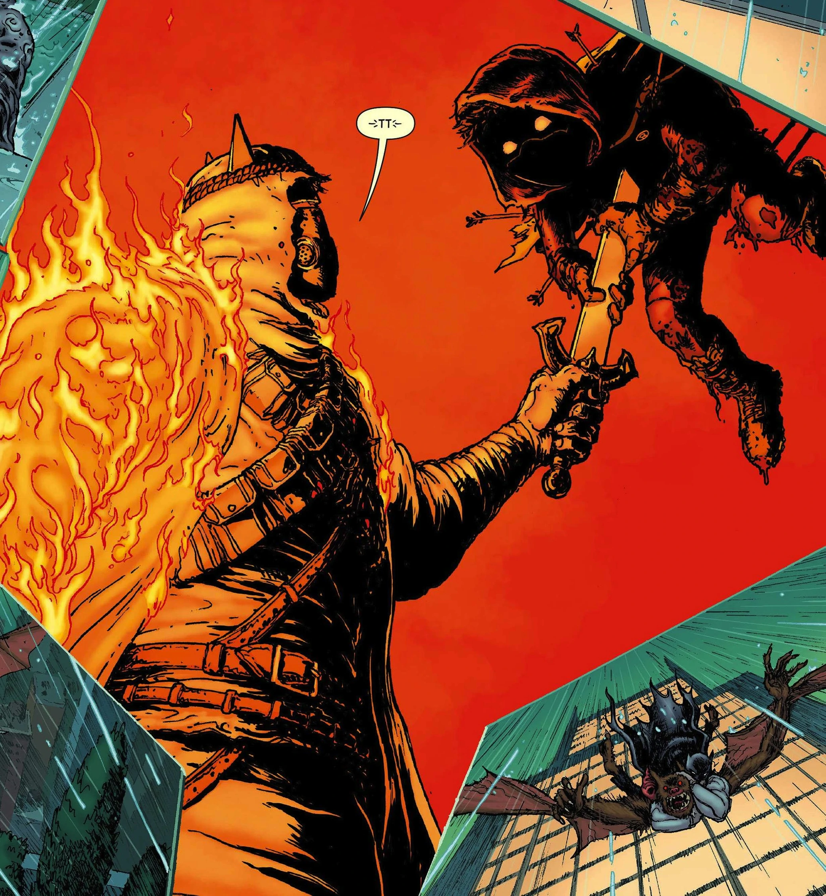

Robin (early life)
Damian Wayne is son of Bruce Wayne and Talia al Ghul. He trained in Order of assassins; as his grandpa (Ra’s al Ghul) was the master of this order, he made sure that Damian trained well as an assassin. After Ra’s death Talia took her son to his father; in city of crime, Gotham.
Batman VS Robin
.jpg)
Actually, Damian wasn’t the first Robin but Batman had some new problems with him. One of the biggest problems that they had was their difference of opinion; Damian was raised in order of assassins and he learned to kill but Batman disagrees assassination. After all these struggles Damian start a journey to find himself and his own space as a teenager.
Robin becomes Batman
After pandemic Zombie Virus in Gotham Dick and Jason was infected the virus and Dick transferred that to Batman. Unfortunately, after a while, they all three would die and Damian the legacy of Batman takes that responsibility to be the next Batman and save the world from the dangers that exists.
Damian dies

As most of the time, Batman forbidden Damian to be in the mission; but Damian wanted to help his father and brothers.
Alfred had the responsibility to take care of Damian but after a while he let him to go and help his father.
Unfortunately, Damian wasn’t ready for battle with Heretic. He tried to defeat him by shooting a cross bow to his heart but that didn’t kill him, just made him more determined to pierce his sword through Robin’s chest.
It wasn’t that hard for Talia to deal with it but for Bruce wasn’t that easy. As always Bruce didn’t want revenge but Ra’s steel wanted to abuse Damian body and Batman had to stop him from what he wanted to do.